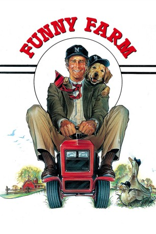

#5533 Funny Farm
 
 IMDB-Wertung: 6.1 / 10
IMDB-Wertung: 6.1 / 10  Tomatometer: 65
Tomatometer: 65  Metascore: 0
Metascore: 0 
Wenn Chevy Chase als Sportjournalist aus Manhattan seine Karriere aufgibt und aufs Land zieht, wissen wir natürlich, dass aus dem “Aussteiger” auf jeden Fall ein Einsteiger wird. Stadtflüchtling Andy Farmer in Funny Farm ist “Chases beste Rolle���, wie Siskel & Ebert urteilten. Madolyn Smith spielt Andys stets hilfsbereite Ehefrau – gemeinsam erleben die komischen Farmers, dass sie in der ländlichen Idylle von mehr exzentrischen Nachbarn und verrückten Katastrophen heimgesucht werden als von ewig summenden Mücken. Und dass man nicht mit dem Titel “Mr. Lammbrätling” angeben sollte, bevor man weiß, was er tatsächlich bedeutet.
Jahr: 1988
Dauer: 101 Minuten
FSK: 6
Land: USA Studio: ABCTonspuren:
Untertitel: Deutsch,
Auflösung: 1080p (1920x1080) Größe: 8980 MB
Genre: Drama, Komödie
Regisseur: George Roy Hill
Drehbuch: Rusty Lemorande
Soundtrack:
Darsteller:
 Chevy Chase als Andy Farmer
Chevy Chase als Andy Farmer- Madolyn Smith Osborne als Elizabeth Farmer
- Kevin O'Morrison als Sheriff Ledbetter
 Joseph Maher als Michael Sinclair
Joseph Maher als Michael Sinclair Mike Starr als Crocker
Mike Starr als Crocker Glenn Plummer als Mickey
Glenn Plummer als Mickey Dakin Matthews als Marion Corey Jr.
Dakin Matthews als Marion Corey Jr. Alice Drummond als Mrs. Ethel Dinges
Alice Drummond als Mrs. Ethel Dinges- Nesbitt Blaisdell als Hank
- George Buck als Peterbrook
 Bill Fagerbakke als Lon Criterion
Bill Fagerbakke als Lon Criterion Raynor Scheine als Oates
Raynor Scheine als Oates Reg E. Cathey als Reporter
Reg E. Cathey als Reporter Kevin Conway als Crum Petree, the Mailman , uncredited
Kevin Conway als Crum Petree, the Mailman , uncredited Sarah Michelle Gellar als Elizabeth's Student , uncredited
Sarah Michelle Gellar als Elizabeth's Student , uncredited- Diane Yang Kirk als Elizabeth's Student , uncredited
 Jack Gilpin als Bud Culbertson
Jack Gilpin als Bud Culbertson- Caris Corfman als Betsy Culbertson
- William Severs als Newspaper Editor
- William Duell als Old Character
- Helen Lloyd Breed als Old Operator
- Kit Le Fever als Young Operator
 William Newman als Gus Lotterhand
William Newman als Gus Lotterhand Brad Sullivan als Brock
Brad Sullivan als Brock Audrie Neenan als Ivy
Audrie Neenan als Ivy- MacIntyre Dixon als Mayor Barclay
- Nicholas Wyman als Dirk Criterion
- Peter Boyden als Reporter
- Dan Desmond als Reporter
- Don Plumley als Reporter
- Brett Miller als Teenager
- Jamie Meyer als Teenager
- David Woodberry als Ike
- Kevin Murphy als Ewell
- Dennis Barr als First Base Coach
- Barbara Baker als Woman in Stands
- David Williams als Marcus
- Steve Jonas als Driving Instructor
- Russell Bletzer als Councilman
- Evelyn McLean als Caroler
- Steven John als Caroler
- Robert Conner als Caroler
- Judson Duncan als Caroler
- Alison Hannas als Caroler
- Robert Ingram als Caroler
- Mary Johnson als Caroler
- Kristin Kellom als Caroler
- Paul Link als Caroler
- Hans Cozzens als Christmas Caroler , uncredited
- Darren Higgins als Boy with Deer , uncredited
Datei: X:\1988\Funny Farm (1988, FSK6, 1920x1080).mkv seit 14.02.2017
Festplatte: HD 1987-1991
 Es gibt insgesamt 66 Filme in der Gruppe '1988'
Es gibt insgesamt 66 Filme in der Gruppe '1988'